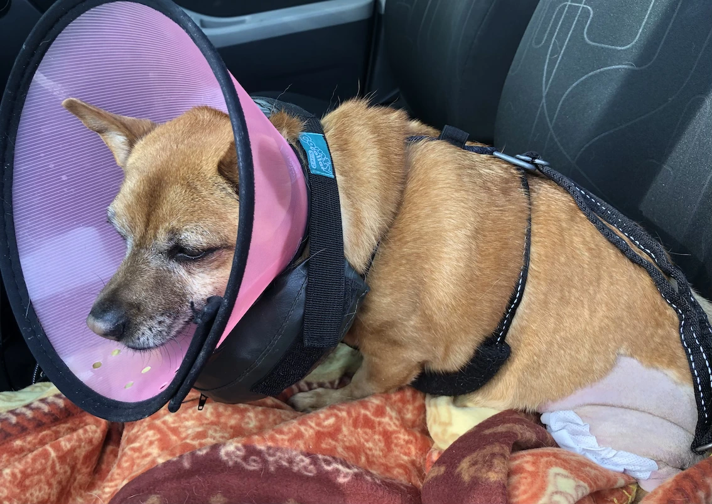
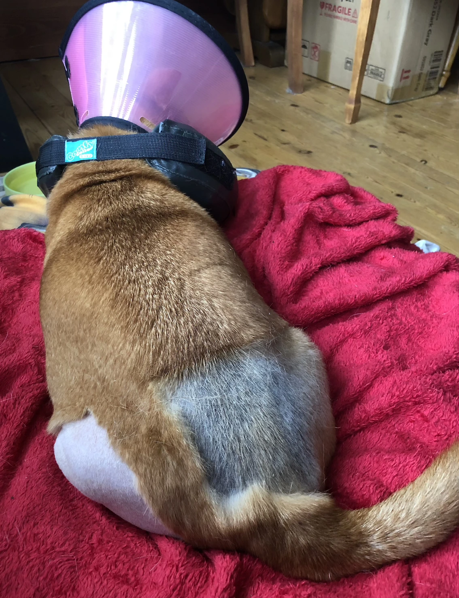

Shake a Leg
[Kuma]: I had a sense of deja vu.
[Jak]: I knew something was up when I got supper...then no breakfast the next morning...and another long road trip with Dad.
I got my other knee fixed.
[Jak]: I'm so glad to be home again. Even with...
[Together]: Nikki!
[Kuma]: You rock that haircut! Those vets at at Liverpool University's Small Animal Teaching Hospital (opens in a new tab) are great with their clippers.
[Jak]: Do you know that some of the kids around our way think I'd had my hair cut as a fashion statement? I don't know what they'll make of two shaved legs.
[Kuma]: Ha! It is taking a long time to grow back. Good job it's summer now.
[Jak]: It'd feel cooler...if only I didn't have to wear the cone...and the padded collar...
[Kuma]: Well, you had the cone last time...because you wouldn't behave. Why the extra gear?
[Jak]: I disgraced myself a bit at the hospital by pulling out the staples in my wound. The padded thing stopped me getting anywhere near it again.
I still can't help myself if the collar is removed. It itches, OK.
[Kuma]: I heard you went to our vet to have all the staples removed and there were hardly any left. Did you eat them? That's nasty.
[Jak]: Says you who eats everything from beak to tail on things you kill.
[Kuma]: I'm designed to do that. You're going to regret what you did though.
[Jak]: I'm fine. I'm healing. It won't be long before I can go on walks again.
[Kuma]: Weeks, I've heard...just saying...